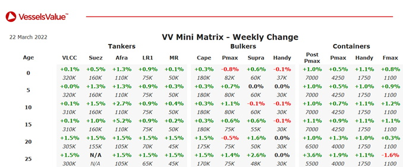

inWeekly Vessel Valuations Report23/03/2022

Tanker:Aframax values have firmed.
MR2 High Priority (46,800 DWT, Mar 2005, Naikai Setoda) sold for USD 9.00 mil, VV value USD 8.51 mil.
Bulker:Bulker values have remained stable.
Capesize Azul Libero (203,300 DWT, Sep 2004, Universal) sold to Chinese buyers for USD 18.75 mil, VV value USD 21.42 mil.
Capesize Stella Anita (180,400 DWT, Jan 2012, Dalian Shipbuilding Industry Corp) sold to Greek for USD 29.00 mil, VV value USD 28.58 mil – SS/DD Passed, BWTS fitted.
Panamax Oceanic (82,500 DWT, Nov 2007, Tadotsu Tsuneishi) sold to NGM Energy for USD 20.70 mil, VV value USD 18.75 mil – SS/DD Passed, BWTS fitted.
Panamax Agri Grande (82,000 DWT, Jan 2017, Jiangsu New Yangzijiang) sold to Chinese buyers for USD 30.50 mil, VV value USD 28.84 mil – SS/DD Passed, BWTS fitted.
Ultramax Ultra Initiator (62,600 DWT, Jun 2019, Oshima) sold to Japanese buyers for USD 37.50 mil, VV value USD 37.43 mil – DD Due, BWTS fitted, Including Charter.
Supramax Atlantic Tulum (58,800 DWT, May 2008, Tsuneishi Cebu) sold for USD 17.40 mil, VV value USD 18.68 mil.
Supramax Orient Rise (56,700 DWT, Apr 2010, Qingshan Shipyard) sold to Greek buyers for USD 16.90 mil, VV value USD 15.32 mil – BWTS fitted.
Handy Bulker Venture Team (38,900 DWT, Nov 2015, Jiangmen Nanyang) sold to Italian buyers for USD 24.80 mil, VV value USD 23.60 mil.
Handy Bulker Corsair (35,100 DWT, Feb 2001, Minami Nippon) sold to Chinese buyers for USD 11.70 mil, VV value USD 10.66 mil – Prompt delivery.
Handy Bulker Cape Flattery (28,400 DWT, Mar 2004, Imabari) sold to Chinese buyers for USD 9.75 mil, VV value USD 10.26 mil – DD Due.
Container:Container values have remained stable.
No sales to report.
